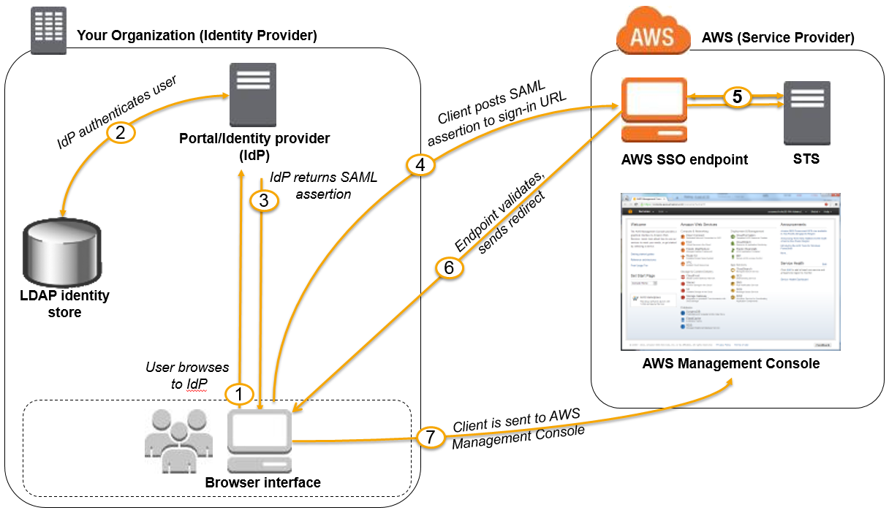

Test Report
Review questions
Jun 16, 2019 10:59PM EDT
 8 correct
8 correct 47 incorrect
47 incorrectYour answer
B. Use SQS for storing the transaction messages; when the billing batch process performs first and consumes the message, write the code in a way that does not remove the message after consumed, so it is available for the audit application several hours later. The audit application can consume the SQS message and remove it from the queue when completed.
C. Store the transaction information in a DynamoDB table. The billing application can read the rows while the audit application will read the rows them remove the data.
D. Use Kinesis to store the transaction information. The billing application will consume data from the stream, the audit application can consume the same data several hours later.
Correct answer is D as the key point here is batch application and message being stored durably and delivery guarantee. Kinesis can store the data durably and allow access to multiple consumers without any dependencies.
Refer AWS documentation - Kinesis Data Streams
Q: How does Amazon Kinesis Data Streams differ from Amazon SQS?
Amazon Kinesis Data Streams enables real-time processing of streaming big data. It provides ordering of records, as well as the ability to read and/or replay records in the same order to multiple Amazon Kinesis Applications. The Amazon Kinesis Client Library (KCL) delivers all records for a given partition key to the same record processor, making it easier to build multiple applications reading from the same Amazon Kinesis data stream (for example, to perform counting, aggregation, and filtering).
Amazon Simple Queue Service (Amazon SQS) offers a reliable, highly scalable hosted queue for storing messages as they travel between computers. Amazon SQS lets you easily move data between distributed application components and helps you build applications in which messages are processed independently (with message-level ack/fail semantics), such as automated workflows.
Q: When should I use Amazon Kinesis Data Streams, and when should I use Amazon SQS?
We recommend Amazon Kinesis Data Streams for use cases with requirements that are similar to the following:
- Routing related records to the same record processor (as in streaming MapReduce). For example, counting and aggregation are simpler when all records for a given key are routed to the same record processor.
- Ordering of records. For example, you want to transfer log data from the application host to the processing/archival host while maintaining the order of log statements.
- Ability for multiple applications to consume the same stream concurrently. For example, you have one application that updates a real-time dashboard and another that archives data to Amazon Redshift. You want both applications to consume data from the same stream concurrently and independently.
- Ability to consume records in the same order a few hours later. For example, you have a billing application and an audit application that runs a few hours behind the billing application. Because Amazon Kinesis Data Streams stores data for up to 7 days, you can run the audit application up to 7 days behind the billing application.
We recommend Amazon SQS for use cases with requirements that are similar to the following:
- Messaging semantics (such as message-level ack/fail) and visibility timeout. For example, you have a queue of work items and want to track the successful completion of each item independently. Amazon SQS tracks the ack/fail, so the application does not have to maintain a persistent checkpoint/cursor. Amazon SQS will delete acked messages and redeliver failed messages after a configured visibility timeout.
- Individual message delay. For example, you have a job queue and need to schedule individual jobs with a delay. With Amazon SQS, you can configure individual messages to have a delay of up to 15 minutes.
- Dynamically increasing concurrency/throughput at read time. For example, you have a work queue and want to add more readers until the backlog is cleared. With Amazon Kinesis Data Streams, you can scale up to a sufficient number of shards (note, however, that you'll need to provision enough shards ahead of time).
- Leveraging Amazon SQS’s ability to scale transparently. For example, you buffer requests and the load changes as a result of occasional load spikes or the natural growth of your business. Because each buffered request can be processed independently, Amazon SQS can scale transparently to handle the load without any provisioning instructions from you.
Option A is wrong as SQS chaining would create dependency among the consumers. If one consumer fails, the message would not be available for the other consumer impacting the availability.
Option B is wrong as although possible is error prone and needs to maintain the position read by the application.
Option C is wrong as with DynamoDB delivery guarantee needs to handled by application as well is not a cost effective solution.
AWS SAP-C01 Question feedbackYour answer
B. Users request a SAML assertion from your on-premises SAML 2.0-compliant identity provider (IdP) and use that assertion to obtain federated access to the AWS Management Console via the AWS single sign-on (SSO) endpoint.
C. Users sign in using an OpenID Connect (OIDC) compatible IdP, receive an authentication token, then use that token to log in to the AWS Management Console.
D. Users log in directly to the AWS Management Console using the credentials from your on-premises Kerberos compliant identity provider.
Correct answer is B as it requires Users having direct access to AWS Management Console using federation and single sign on.
Refer AWS Documentation - Enabling SAML 2.0 Federated Users to Access the AWS Management Console

Your answer
B. Register the application with a Web Identity Provider like Amazon, Google, or Facebook, create an IAM role for that provider, and set up permissions for the IAM role to allow S3 gets and DynamoDB puts. You serve your mobile application out of an S3 bucket enabled as a web site. Your client updates DynamoDB.
C. Provide the JavaScript client with temporary credentials from the Security Token Service using a Token Vending Machine (TVM) to provide signed credentials mapped to an IAM user allowing DynamoDB puts. You serve your mobile application out of Apache EC2 instances that are load-balanced and autoscaled. Your EC2 instances are configured with an IAM role that allows DynamoDB puts. Your server updates DynamoDB.
D. Register the JavaScript application with a Web Identity Provider like Amazon, Google, or Facebook, create an IAM role for that provider, and set up permissions for the IAM role to allow DynamoDB puts. You serve your mobile application out of Apache EC2 instances that are load-balanced and autoscaled. Your EC2 instances are configured with an IAM role that allows DynamoDB puts. Your server updates DynamoDB
Key point here is cost-effective and scalable architecture
Correct answer is B as using S3 to host the static application using Javascript SDK to interact with Web identity federation to authenticate and update DynamoDB. As there aren't large spikes with scale as well.
Option A is wrong as single EC2 instance not a scalable architecture. As well as there is no such TVM out of the box. Needs to be implemented.
Option C is wrong as is scalable but not cost effective. As well as there is no such TVM out of the box. Needs to be implemented.
Option D is wrong as is scalable but not cost effective
AWS SAP-C01 Question feedbackYour answer
B. Configure a single routing table with a default route via the internet gateway Propagate specific routes for the on-premises networks via BGP on the AWS Direct Connect customer router Associate the routing table with all VPC subnets.
C. Configure a single routing table with two default routes: one to the internet via an Internet gateway the other to the on-premises network via the VPN gateway use this routing table across all subnets in your VPC.
D. Configure two routing tables one that has a default route via the Internet gateway and another that has a default route via the VPN gateway Associate both routing tables with each VPC subnet.
Correct answer is B as you need to propagate specific routes
Option A is wrong as propagating default route would cause conflict
Option C is wrong as there cannot be 2 default routes
Option D is wrong as as the instances has to be in public subnet and should have a single routing table associated with them
AWS SAP-C01 Question feedbackYour answer
B. You will need to use complex routing (nested record sets) and ensure that you define the weighted resource sets first
C. You will need to use AAAA - IPv6 addresses when you define the weighted based record sets
D. This cannot be done. You can't use different routing records together
Key point here understand Route 53 routing policies
Refer AWS documentation for Complex Routing policies & Process

Steps are
1. Create a group of weighted resource record sets for the Amazon EC2 instances in the region.
2. For each region in which you have multiple Amazon EC2 instances (for example, US East (Ohio)), create a latency alias resource record set. For the value of Alias Target, specify the value of the Name field (for example, us-east.example.com) that you assigned to the weighted resource record sets in that region
Correct answer is B as you need to define Weighted based records first and then latency records.
Option A is wrong as you need to define Weighted based records first and then latency records.
Option C is wrong as you can define complex (nested) routing policies
Option D is wrong as you don't need IPv6 for this
AWS SAP-C01 Question feedbackYour answer
B. Use Amazon Simple Workflow (SWF) to manage assessments, movement of data & meta-data. Use an autoscaling group of G2 instances in a placement group.
C. Use Amazon Simple Workflow (SWF) to manage assessments, movement of data & meta-data. Use an autoscaling group of C3 instances with SR-IOV (Single Root I/O Virtualization).
D. Use AWS data Pipeline to manage movement of data & meta-data and assessments use auto-scaling group of C3 with SR-IOV (Single Root I/O virtualization)
Key point here hybrid work flow with both automated and manual tasks and ability to replay also needing GPUs with CUD instances with low latency networking
Correct anwser is B as SWF provides an ability to have both human and automated assessments with G2 instances in a placement group providing GPU and low latency networking
Option A & D are wrong as it involves hybrid approach involving human assessments.
Option C & D are wrong as C3 and SR-IOV won’t provide GPU as well as Enhanced networking needs to be enabled
AWS SAP-C01 Question feedbackYour answer
B. Configure an instance in each subnet to switch its network interface card to promiscuous mode and analyze network traffic.
C. Implement Elastic Load Balancing with SSL listeners In front of the web applications
D. Implement a reverse proxy layer in front of web servers and configure IDS/IPS agents on each reverse proxy server
D. Implement a reverse proxy layer in front of web servers and configure IDS/IPS agents on each reverse proxy server
Correct answer is A & D implementing a IDS/IPS agent on the instance or on the reverse proxy layer can help
Option B is wrong as promiscuous mode cannot be setup and each VPC, subnet only receives traffic meant for it
Option C is wrong as ELB with SSL does not serve as IDS/IPS
Your answer
B. Send all the log events to Amazon Kinesis develop a client process to apply heuristics on the logs
C. Configure Amazon CloudTrail to receive custom logs, use EMR to apply heuristics the logs
D. Setup an Auto Scaling group of EC2 syslogd servers, store the logs on S3 use EMR to apply heuristics on the logs
Key point here is requiring real time analytics and ability to go back to data samples from last 12 hours
Correct answer is B as can perform real time analysis and stores data for 24 hours which can be extended to 7 days. Also data is not removed from Kinesis till 24 hours default, can be extended, and can be used to retrieve past data
Option A is wrong as SQS is not for real time ingestion of data. Also, once the message is consume it would be deleted and not available.
SQS minimum message size is 1,024 bytes (1 KB). The maximum is 262,144 bytes (256 KB). While Kinesis can store upload 1MB
Option C is wrong as CloudTrail is only for auditing and CloudWatch can be used to collect logs
Option D is wrong as EMR is for batch analysis
AWS SAP-C01 Question feedbackYour answer
B. The usage across all accounts can share the volume pricing discounts and Reserved Instance discounts.
C. Consolidated billing feature does not bring additional cost.
D. AWS Organizations automatically creates a root user and an IAM role for all linked accounts so that the master account can accessing and administering the member accounts.
C. Consolidated billing feature does not bring additional cost.
Correct answers are B & C as Consolidated billing is not charged and it can help lower cost by volume discounts and reserved instance discounts.
Refer AWS documentation - Consolidate Billing
You can use the consolidated billing feature in AWS Organizations to consolidate billing and payment for multiple AWS accounts or multiple Amazon Internet Services Pvt. Ltd (AISPL) accounts. Every organization in AWS Organizations has a master account that pays the charges of all the member accounts.
Consolidated billing has the following benefits:
- One bill – You get one bill for multiple accounts.
- Easy tracking – You can track the charges across multiple accounts and download the combined cost and usage data.
- Combined usage – You can combine the usage across all accounts in the organization to share the volume pricing discounts and Reserved Instance discounts. This can result in a lower charge for your project, department, or company than with individual standalone accounts. For more information, see Volume Discounts.
- No extra fee – Consolidated billing is offered at no additional cost.
Option A is wrong as the linked accounts can still see al the charges and costs.
Option D is wrong as for the accounts invited the role is not automatically created.
By default, if you create a member account as part of your organization, AWS automatically creates a role in the account that grants administrator permissions to delegated IAM users in the master account. By default, that role is named OrganizationAccountAccessRole.
However, member accounts that you invite to join your organization do not automatically get an administrator role created. You have to do this manually, as shown in the following procedure. This essentially duplicates the role automatically set up for created accounts. We recommend that you use the same name, OrganizationAccountAccessRole, for your manually created roles for consistency and ease of remembering
Your answer
B. Create IAM users and a cross-account role in the Master account that grants full Admin permissions to the Dev and Test accounts.
C. Create IAM users in the Master account Create cross-account roles in the Dev and Test accounts that have full Admin permissions and grant the Master account access
D. Link the accounts using Consolidated Billing. This will give IAM users in the Master account access to resources in the Dev and Test accounts
Key here is to understand Cross Account access with IAM Roles & Consolidated Billing
Correct answer is C as you need to create roles in the dev and test environment with proper permissions, grant access to master account administrators to assume the role.
Option A is wrong as you cannot inherit permissions and need to be explicitly defined.
Option B is wrong as the cross account role needs to be created in the Dev & Test account and not the master account
Option D is wrong as using consolidate billing does not grant permission for IAM users in Master account access to Dev and Test accounts.
AWS SAP-C01 Question feedbackYour answer
B. Create VPC Endpoints for S3 and DynamoDB and modify the route tables for all the availability zones used by the auto scaling group
C. Use the NAT Gateway for all the egress communication to these AWS services
D. Setup VPC gateway endpoint for S3 and interface endpoint for DynamoDB to communicate with these services over the private AWS network
E. Use the S3 Cross Region Replication to save the configurations in the multiple regions
B. Create VPC Endpoints for S3 and DynamoDB and modify the route tables for all the availability zones used by the auto scaling group
E. Use the S3 Cross Region Replication to save the configurations in the multiple regions
Correct answers are A, B & E
Options A & E as the data is needed in multiple regions, DynamoDB and S3 data should be made available across region using global tables and cross region replication.
Option B as for accessing S3 and DynamoDB using VPC Endpoints, a gateway endpoint needs to be created.
A gateway endpoint is a gateway that is a target for a specified route in your route table, used for traffic destined to a supported AWS service. The following AWS services are supported:
- Amazon S3
- DynamoDB
Option C is wrong as NAT Gateway is for outgoing egress traffic and does not provide secure communication channel.
Option D is wrong as DynamoDB can be accessed using Gateway endpoint and not interface endpoint.
AWS SAP-C01 Question feedbackYour answer
B. Create an IAM group that only gives access to your application and to the DynamoDB tables. Then, when writing to DynamoDB, simply include the unique device ID to associate the data with that specific user.
C. Create an IAM role with the proper permission policy to communicate with the DynamoDB table. Use web identity federation, which assumes the IAM role using AssumeRoleWithWebldentity, when the user signs in, granting temporary security credentials using STS.
D. Create an Active Directory server and an AD user for each mobile application user. When the user signs in to the AD sign-on, allow the AD server to federate using SAML 2.0 to IAM and assign a role to the AD user which is the assumed with AssumeRoleWithSAML.
Correct answer is C as with mobile application web identity federation can be used to authenticate with Open ID compliant provider and grant access using IAM role and STS
AssumeRoleWithWebIdentity returns a set of temporary Security Credentials for users who have been authenticated in a mobile Or Web application with a Web identity provider, such as Amazon Cognito, Login with Amazon, Facebook, Google, or any OpenID Connect-Compatible identity provider.
Option A, B and D are wrong as creating individual IAM users is not recommended, is cumbersome.
Your answer
B. Create a IAM user for the application with permissions that allow list access to the S3 bucket launch the instance as the IAM user and retrieve the IAM user’s credentials from the EC2 instance user data.
C. Create an IAM role for EC2 that allows list access to objects in the S3 bucket. Launch the instance with the role, and retrieve the role’s credentials from the EC2 Instance metadata
D. Create an IAM user for the application with permissions that allow list access to the S3 bucket. The application retrieves the IAM user credentials from a temporary directory with permissions that allow read access only to the application user.
Correct answer is C - If there is an IAM role associated with the instance at launch, role-name is the name of the role, and role-name contains the temporary security credentials associated with the role. Otherwise, not present.
Refer AWS documentation - EC2 Instance Metadata
Instance metadata is data about your instance that you can use to configure or manage the running instance. Instance metadata is divided into categories.
Because your instance metadata is available from your running instance, you do not need to use the Amazon EC2 console or the AWS CLI. This can be helpful when you're writing scripts to run from your instance. For example, you can access the local IP address of your instance from instance metadata to manage a connection to an external application.
To view all categories of instance metadata from within a running instance, use the following URI:
http://169.254.169.254/latest/meta-data/Option A is wrong as it would work but is not a secure way
Option B is wrong as IAM user credentials are not available from user data
Option D is wrong would work but does not provide security
Your answer
B. Create an EC2 instance which has both an ACL and the security group attached to it and have separate rules for each IP address.
C. Create an EC2 instance which has multiple subnets attached to it and each will have a separate IP address.
D. Create an EC2 instance with a NAT address.
Correct answer is A as multiple elastic network interfaces can be attached to the EC2 instance and each network IP can have the component running with separate SSL certificates.
Refer AWS documentation - EC2 Multiple IP address
It can be useful to assign multiple IP addresses to an instance in your VPC to do the following:
- Host multiple websites on a single server by using multiple SSL certificates on a single server and associating each certificate with a specific IP address.
- Operate network appliances, such as firewalls or load balancers, that have multiple IP addresses for each network interface.
- Redirect internal traffic to a standby instance in case your instance fails, by reassigning the secondary IP address to the standby instance.
Points : 5 out of 5
Your answer
B. Pilot Light
C. Multi-Site
D. Warm Standby
Correct answer is B as this is a Pilot Light DR strategy. In Pilot Light DR strategy the critical resources are replicated and all the preparation for the other resources are made (for e.g. AMIs). Other resources can be created through CloudFormation template allowing a quick switchover.
Refer AWS documentation - Disaster Recovery Whitepaper

The term pilot light is often used to describe a DR scenario in which a minimal version of an environment is always running in the cloud. The idea of the pilot light is an analogy that comes from the gas heater. In a gas heater, a small flame that’s always on can quickly ignite the entire furnace to heat up a house.
This scenario is similar to a backup-and-restore scenario. For example, with AWS you can maintain a pilot light by configuring and running the most critical core elements of your system in AWS. When the time comes for recovery, you can rapidly provision a full-scale production environment around the critical core.
Infrastructure elements for the pilot light itself typically include your database servers, which would replicate data to Amazon EC2 or Amazon RDS. Depending on the system, there might be other critical data outside of the database that needs to be replicated to AWS. This is the critical core of the system (the pilot light) around which all other infrastructure pieces in AWS (the rest of the furnace) can quickly be provisioned to restore the complete system.
To provision the remainder of the infrastructure to restore business-critical services, you would typically have some preconfigured servers bundled as Amazon Machine Images (AMIs), which are ready to be started up at a moment’s notice. When starting recovery, instances from these AMIs come up quickly with their pre-defined role (for example, Web or App Server) within the deployment around the pilot light.
Option A is wrong as data and resources are backed up and restored in case of a DR.
Option C is wrong as a multi-site solution runs in AWS as well as on your existing on-site infrastructure in an active-active configuration.
Option D is wrong as with Warm standby a scaled-down version of a fully functional environment is always running in the cloud. A warm standby solution extends the pilot light elements and preparation. It further decreases the recovery time because some services are always running. By identifying your business-critical systems, you can fully duplicate these systems on AWS and have them always on.
AWS SAP-C01 Question feedbackYour answer
B. Enable CloudFront logging into an S3 bucket, leverage EMR to analyze CloudFront logs to determine the number of downloads per customer, and return the content S3 URL unless the download limit is reached.
C. Enable URL parameter forwarding, let the authentication backend count the number of downloads per customer in RDS, and invalidate the CloudFront distribution as soon as the download limit is reached.
D. Enable CloudFront logging into the S3 bucket, let the authentication backend determine the number of downloads per customer by parsing those logs, and return the content S3 URL unless the download limit is reached.
E. Configure a list of trusted signers, let the authentication backend count the number of download requests per customer in RDS, and return a dynamically signed URL unless the download limit is reached.
E. Configure a list of trusted signers, let the authentication backend count the number of download requests per customer in RDS, and return a dynamically signed URL unless the download limit is reached.
Correct answer are A & E as the key point here to perform real time calculation to limit user downloads and the better approach would be to maintain a counter rather then having to do all the analysis again
As with A you can use URL parameter forwarding to identity the user and maintain the counter in RDS and return the content of S3, not the S3 url.
With E allows real time count and you can have trusted signers to create URLs which are dynamically signed and invalidated using expiration.
Option B is wrong as EMR is mainly for batch processing capability
Option C is wrong as TTL is already set to 0 and can’t invalidate the CloudFront distribution but only objects
Option D is wrong as using S3 for logging and performing analysis and calculation over the S3 would be slow and cumbersome
Your answer
B. RDS cannot replicate to an on-premise database server. Instead, first configure the RDS instance to replicate to an EC2 instance with core MySQL, and then configure replication over a secure VPN VPG connection.
C. Create a Data Pipeline that exports the MySQL data each night and securely downloads the data from an S3 HTTPS endpoint.
D. Create an IPSec VPN connection using either OpenVPN or VPN/WGW through the Virtual Private Cloud service and enable replication from AWS RDS to on-premises database instance
Correct answer is D as you can replicate from AWS to On premises database using a VPN connection for security.
Option A is wrong as SSL endpoint is more for secure access to the database
Option B & C are wrong as it is not almost real time and would take time.
AWS SAP-C01 Question feedbackYour answer
B. Use web Identity Federation to retrieve AWS temporary security credentials to enable your NOC members to sign in to the AWS Management Console.
C. Use your on-premises SAML 2.0 compliant identity provider (IDP) to grant the NOC members federated access to the AWS Management Console via the AWS single sign-on (SSO) endpoint
D. Use your on-premises SAML 2.0 compliant identity provider (IDP) to retrieve temporary security credentials to enable NOC members to sign in to the AWS Management Console
Key point here is that you need to give NOC member access to AWS Management Console using on premises SSO to avoid signing in again.
Correct answer is C talks about using federation and single sign on.
Refer to AWS Document for Enabling SAML 2.0 Federated Users to Access the AWS Management Console
Option A & B is wrong as OAuth is not applicable as we are not using web identity federation, as it is used with public identity providers
Option D is wrong as you do not need to retrieve temporary security credentials for signing into to AWS console, as it is transparently handled by the iDP.
Your answer
B. Amazon DynamoDB and Amazon Elastic MapReduce with Spot instances.
C. Amazon RDS and Amazon Elastic MapReduce with Reserved instances.
D. Amazon DynamoDB and Amazon Elastic MapReduce with Reserved instances
Key point here is to optimize cost and performance only for the increased workload only, not the existing one
Refer EMR best practices - For unpredictable workloads, the suggested pricing model is Spot or On-Demand.
Correct answer is B and preferred over A as DynamoDB would be preferred over RDS for the throughput supported and Spot instances to reduce cost and handle the temporary workload.
Option C & D are wrong as Reserved instances would be preferred for a consistent and predictable workload and would prove costly in this scenario.
Your answer
B. If the application is using HTTP, configure proxy protocol to pass the client IP address in a new HTTP header. If the application is using TCP, modify the application code to pull the client IP into the x-forward-for header so the web servers can parse it.
C. Configure ELB access logs then create a Data Pipeline job which imports the logs from an S3 bucket into EMR for analyzing and output the EMR data into a new S3 bucket.
D. If the application is using TCP, configure proxy protocol to pass the client IP address in a new TCP header. If the application is using, HTTP modify the application code to pull the client IP into the x-forward-for header so the web servers can parse it.
Correct answer is D as the requirement is scan web server and error logs and the webserver being behind the ELB would not receive the Client IP address and would need proxy protocol for TCP or x-forward-for header for HTTP traffic.
Refer AWS ELB Blog, Proxy Protocol & X-Forward headers
Until today, ELB allowed you to obtain the clients IP address only if you used HTTP(S) load balancing, which adds this information in the X-Forwarded-For headers. Since X-Forwarded-For is used in HTTP headers only, you could not obtain the clients IP address if the ELB was configured for TCP load balancing. Many of you told us that you wanted similar functionality for TCP traffic, so we added support for Proxy Protocol. It simply prepends a human readable header with the clients connection information to the TCP data sent to your server. The advantage of Proxy Protocol is that it can be used with any protocol layer above TCP, since it has no knowledge of the higher-level protocol that is used on top of the connection. Proxy Protocol is useful when you are serving non-HTTP traffic.
Your answer
B. Generate the reports by querying the synchronously replicated standby RDS MySQL instance maintained through Multi-AZ
C. Launch a RDS Read Replica connected to your Multi AZ master database and generate reports by querying the Read Replica.
D. Generate the reports by querying the ElastiCache database caching tier.
Correct answer is C using Read Replicas
Refer AWS Blog - RDS Read Replica
There are other use cases for a Read Replica beyond increasing effective read traffic capacity. For example, you might want to use a Read Replica for business reporting. This prevents queries by business analysts from impacting the performance of your production DB Instance
Your answer
B. Create a Kinesis video stream to capture, store, and index the videos from the camera-equipped home devices.
C. Transform the stream data to HLS compatible data by using Kinesis Data Analytics or customer code in EC2/Lambda. Then in the mobile application, use HLS protocol to display the video stream by using the converted HLS streaming data.
D. In the mobile application, use HLS to display the video stream by using the HLS streaming session URL.
D. In the mobile application, use HLS to display the video stream by using the HLS streaming session URL.
Correct answers are B & D as Kinesis Video Streams can be used to stream, store Videos and these videos can then be streamed back using APIs.
Refer AWS documentation - Kinesis Video Streams
Amazon Kinesis Video Streams makes it easy to securely stream video from connected devices to AWS for analytics, machine learning (ML), and other processing. Kinesis Video Streams automatically provisions and elastically scales all the infrastructure needed to ingest streaming video data from millions of devices. It also durably stores, encrypts, and indexes video data in your streams, and allows you to access your data through easy-to-use APIs. Kinesis Video Streams enables you to quickly build computer vision and ML applications through integration with Amazon Rekognition Video and libraries for ML frameworks such as Apache MxNet, TensorFlow, and OpenCV.
Kinesis Video Streams is ideal for building computer vision-enabled ML applications that are becoming prevalent in a wide range of use cases such as the following:
Smart Home - With Kinesis Video Streams, you can easily stream video and audio from camera-equipped home devices such as baby monitors, webcams, and home surveillance systems to AWS. You can then use the streams to build a variety of smart home applications ranging from simple video playback to intelligent lighting, climate control systems, and security solutions.
Option A is wrong as Kinesis Data Firehose is used for streaming data delivery rather than video streaming.
Option C is wrong as there is no need for transforming the data to HLS, if using Kinesis Video Streams.
AWS SAP-C01 Question feedbackYour answer
B. Configure a CloudFront distribution and configure the origin to point to the private IP addresses of your Web servers. Configure a Route 53 CNAME record to your CloudFront distribution.
C. Place all your web servers behind ELB. Configure a Route 53 CNAME to point to the ELB DNS name.
D. Assign EIPs to all web servers. Configure a Route 53 record set with all EIPs. With health checks and DNS failover.
E. Configure ELB with an EIP. Place all your Web servers behind ELB Configure a Route 53 A record that points to the EIP
D. Assign EIPs to all web servers. Configure a Route 53 record set with all EIPs. With health checks and DNS failover.
Key point here is HA solution
Correct answer is C & D
Option C as you can use ELB and configure CNAME to point to ELB DNS, need to be alias for non zone apex record.
Option D as you can have EIPs assigned and switched for HA and have them configured with Route 53 record set. Refer AWS documentation
Option A is wrong as NAT is for internet connectivity for instances in private subnet and not to route traffic in
Option B is wrong as CloudFront is more of a caching solution for scalability rather than HA
Option E is wrong as you cannot associate a EIP with ELB
Your answer
B. An Internet Gateway to allow a VPN connection.
C. An Elastic IP address on the VPC instance
D. An IP address space that does not conflict with the one on-premises
E. Entries in Amazon Route 53 that allow the Instance to resolve its dependencies’ IP addresses
F. A VM Import of the current virtual machine
D. An IP address space that does not conflict with the one on-premises
F. A VM Import of the current virtual machine
Correct answer is A, D and F
Refer to the VPC Connectivity Whitepaper
Option A as you need a VPN or a DX for communication to on-premises network.
Option D as for communication from AWS VPC to on-premises network the IP address cannot conflict
Option F as a VM Import would be needed to copy the VM to AWS as there is no documentation and it can’t be configured from scratch
Option B is wrong as Virtual and Customer gateway is needed. IGW is needed for direct internet connectivity
Option C is wrong as we don’t need a EIP as private subnets can also interact with on-premises network
Option E is wrong as Route 53 would not help resolve ip addresses. It helps only in internal AWS IP addresses.
Your answer
B. Modify the application to write to an Amazon SQS queue and develop a worker process to flush the queue to the on-premises database
C. Modify the application to use DynamoDB to feed an EMR cluster, which uses a map function to write to the on-premises database.
D. Provision an RDS read-replica database on AWS to handle the writes and synchronize the two databases using Data Pipeline.
Key point here is solution need not be ACID and to be able to handle large volume of writes.
Correct answer is B as SQS is cost effective and would help distribute the load to control writes to the on-premises database and does not need to be ACID as well.
Option A is wrong as S3DistCp only helps to efficiently copy a large amount of data from S3 into the HDFS datastore of the cluster.
Option C is wrong as DynamoDB and EMR are analytics and do not help in reducing load on on-premises database
Option D is wrong as Read Replicas cannot handle writes
AWS SAP-C01 Question feedbackYour answer
B. Increasing the size of all the instances.
C. Adding more instances to the Placement Group. Making sure you stop and restart all the other instances at the same time.
D. Splitting the instances across two Placement Groups in the same Availability Zone
Correct answer is A as Enhanced networking uses single root I/O virtualization (SR-IOV) to provide high-performance networking capabilities on supported instance types
Refer AWS documentation - EC2 Enhanced Networking & Placement Groups
SR-IOV is a method of device virtualization that provides higher I/O performance and lower CPU utilization when compared to traditional virtualized network interfaces. Enhanced networking provides higher bandwidth, higher packet per second (PPS) performance, and consistently lower inter-instance latencies. There is no additional charge for using enhanced networking.
A placement group is a logical grouping of instances within a single Availability Zone. Placement groups are recommended for applications that benefit from low network latency, high network throughput, or both. To provide the lowest latency, and the highest packet-per-second network performance for your placement group, choose an instance type that supports enhanced networking.
Your answer
B. Restore by implementing a lifecycle policy on the Amazon S3 bucket.
C. Make an Amazon Glacier Restore API call to load the files into another Amazon S3 bucket within four to six hours.
D. Launch a new AWS Storage Gateway instance AMI in Amazon EC2, and restore from a gateway snapshot.
E. Create an Amazon EBS volume from a gateway snapshot, and mount it to an Amazon EC2instance
F. Launch an AWS Storage Gateway virtual iSCSI device at the branch office, and restore from a gateway snapshot
E. Create an Amazon EBS volume from a gateway snapshot, and mount it to an Amazon EC2instance
F. Launch an AWS Storage Gateway virtual iSCSI device at the branch office, and restore from a gateway snapshot
Correct answer are D, E & F as Storage Gateway volumes are only accessible from the AWS Storage Gateway and cannot be directly accessed using Amazon S3 APIs.
Refer AWS documentation - Storage Gateway FAQs
AWS SAP-C01 Question feedbackYour answer
B. Use a VPC with a private subnet for the license and a public subnet for the EC2.
C. Use a VPC with a private subnet and configure the MAC address to be tied to that subnet.
D. Use a VPC with an elastic network interface that has a fixed MAC Address.
Key point here is it is a legacy system and to maintain MAC address.
Correct answer is D
Refer to AWS Documentation for Using ENI
An elastic network interface is a virtual network interface that you can attach to an instance in a VPC and has several attributes which includes the MAC address.
Points : 5 out of 5
Your answer
B. Enable Reserved Instance Sharing on reserved instances in the master account
C. Enable Reserved Instance Sharing on all member accounts & purchase reserved instances in the master account
D. Disable Reserved Instance Sharing on all member accounts, purchase an appropriate number of reserved instances on a per account basis - overestimate the load to account for growth.
Correct answer is B as this will ensure a single account can control spend and the benefits will be realised by all member accounts. Note this won't reserve the capacity.
Refer AWS documentation - EC2 RI Consolidated Billing
The way that Reserved Instance discounts apply to accounts in an organization's consolidated billing family depends on whether Reserved Instance sharing is turned on or off for the account. By default, Reserved Instance sharing for all accounts in an organization is turned on. You can change this setting by Turning Off Reserved Instance Sharing for an account.
The capacity reservation for a Reserved Instance applies only to the account the Reserved Instance was purchased on, regardless of whether Reserved Instance sharing is turned on or off.
The payer account of an organization can turn off Reserved Instance (RI) sharing for any accounts in that organization, including the payer account. This means that Reserved Instances aren't shared between any accounts that have sharing turned off. To share an RI with an account, both accounts must have sharing turned on. This preference isn't permanent, and you can change it at any time. Each estimated bill is computed using the last set of preferences.
Option C is wrong as this won't provide any benefit as sharing reserved instances need the option to be enabled on accounts who purchase the reservations and accounts which need to benefit.
Options A & D are wrong as the Reserved Instance Sharing should be enabled to achieve cost reductions via reserved instances.
AWS SAP-C01 Question feedbackYour answer
B. Use one master account and many sub accounts.
C. Use one master account and no sub accounts.
D. Use one account but multiple VPCs to break out environments.
B. Use one master account and many sub accounts.
Correct answer are A & B as IAM role would help provide insights into the environment regarding utilization of resources and Consolidated billing would require a master account and sub accounts.
Refer AWS documentation - Consolidated Billing
AWS SAP-C01 Question feedbackYour answer
B. Create a private resource record set using Route 53 with a hostname of applayer.example.com and an alias record to example-app.us-east-1.elb.amazonaws.com
C. Add a cname record to the existing on-premise DNS server with a value of example-app.us-east-1.elb.amazonaws.com. Create a public resource record set using Route 53 with a hostname of applayer.example.com and an alias record to example-app.us-east-1.elb.amazonaws.com.
D. Create an environment variable passed to the EC2 instances using user-data with the ELB hostname, example-app.us-east-1.elb.amazonaws.com.
Correct answer is B. The key here is to understand that the communication within the tiers was being performed using an hard coded hostname i.e. applayer.example.com. So the solution would be to create a private record set with the hostname, which would be internal, and map it as an alias record to the ELB which would help route all the queries.
Refer AWS documentation - Route 53 Private Hosted Zones
A private hosted zone is a container that holds information about how you want to route traffic for a domain and its subdomains within one or more Amazon Virtual Private Clouds (Amazon VPCs). To begin, you create a private hosted zone and specify the Amazon VPCs that you want to associate with the hosted zone. You then create resource record sets that determine how Amazon Route 53 responds to queries for your domain and subdomains within and among your Amazon VPCs. For example, if you have a web server associated with your domain, you'll create an A record in your hosted zone so browser queries for example.com are routed to your web server.
Your answer
B. Have the application synchronously invoke a new AWS Lambda function to access the on-premises database.
C. Add a VPN connection between the data center and the virtual private gateway on the VPC.
D. Migrate the on-premises database to EC2 instances in the VPC.
Correct answer is C as a VPN connection between data center and virtual private gateway would provide high availability in case the Direct Connect connection fails.
Refer AWS documentation - Direct Connect FAQs
Q. Will I lose connectivity if my AWS Direct Connect link fails?
If you have established a second AWS Direct Connect connection, traffic will failover to the second link automatically. We recommend enabling Bidirectional Forwarding Detection (BFD) when configuring your connections to ensure fast detection and failover.
To achieve high availability, we recommend you to have connections at multiple AWS Direct Connect locations. You can refer to this page to learn more about achieving highly available network connectivity.
If you have configured a back-up IPsec VPN connection instead, all VPC traffic will failover to the VPN connection automatically. Traffic to/from public resources such as Amazon S3 will be routed over the Internet. If you do not have a backup AWS Direct Connect link or a IPsec VPN link, then Amazon VPC traffic will be dropped in the event of a failure. Traffic to/from public resources will be routed over the Internet.
Option A is wrong as to access resources within an VPC, a private virtual interface is required.
Option B is wrong as Lambda does not provide any benefits, but complicates the architecture.
Option D is wrong as the database is used by multiple on-premises applications, it would not provide any benefit.
AWS SAP-C01 Question feedbackYour answer
B. Kinesis Firehose + Redshift
C. EMR using Hive
D. EMR running Apache Spark
Key point is perform ad-hoc analytics with data at high velocity
Correct answer is B as Kinesis Firehose provides a managed service for aggregating streaming data and inserting it into RedShift. RedShift also supports ad-hoc queries over well-structured data using a SQL-compliant wire protocol, so the business team should be able to adopt this system easily
Option A is wrong as RDS would not be suitable for ad-hoc analytics
Option C & D are wrong as EMR does not itself handle data at high velocity. Need Kafka or similar frameworks
AWS SAP-C01 Question feedbackYour answer
B. Configure a bucket policy and set Origin Access Identity (OAI)
C. Add Trusted signers to a CloudFront behaviour
D. Restrict based on application user name and the user-passthrough authentication type on the CloudFront IDP setting
E. Integrate the CloudFront distribution with the application using web identity federation and Cognito
C. Add Trusted signers to a CloudFront behaviour
Correct answers are B & C as the issue is the S3 content is also accessible directly. The Solution is to make the S3 content private using bucket policy and allowing only access to CloudFront using Origin Access Identity and enabling Trusted Signers on CloudFront behaviour.
Refer AWS documentation - CloudFront Private Content Restrict Access to S3
To ensure that your users access your files using only CloudFront URLs, regardless of whether the URLs are signed, do the following:
- Create an origin access identity, which is a special CloudFront user, and associate the origin access identity with your distribution. You associate the origin access identity with origins, so that you can secure all or just some of your Amazon S3 content. You can also create an origin access identity and add it to your distribution when you create the distribution.
- Change the permissions either on your Amazon S3 bucket or on the files in your bucket so that only the origin access identity has read permission (or read and download permission). When your users access your Amazon S3 files through CloudFront, the CloudFront origin access identity gets the files on behalf of your users. If your users request files directly by using Amazon S3 URLs, they're denied access. The origin access identity has permission to access files in your Amazon S3 bucket, but users don't.
Web distributions – You add trusted signers to cache behaviors. If your distribution has only one cache behavior, users must use signed URLs or signed cookies to access any file associated with the distribution. If you create multiple cache behaviors and add trusted signers to some cache behaviors and not to others, you can require that users use signed URLs or signed cookies to access some files and not others.
AWS SAP-C01 Question feedbackYour answer
B. Use the mysqldump utility to export the data to local storage. Copy the data to an Amazon S3 bucket. Create a new Amazon RDS MySQL DB instance. Import the data into the new RDS instance.
C. Use AWS Storage Gateway to copy database data to an Amazon S3 bucket. Create a new Amazon RDS instance using the AWS Management Console, and import the data from Amazon S3.
D. Create a new Amazon RDS MySQL DB instance and an AWS DMS replication instance. Configure an AWS DMS task to copy data from the on-premises database to the RDS instance using a full load and change data capture (CDC) strategy.
Correct answer is D as you can use AWS Data Migration Service to migrate data from on-premises instance to RDS MySQL instance. Full load with CDC helps migrate existing data and then updates the target database based on changes to the source database.
Refer AWS documentation - AWS Ongoing Replication
You can create an AWS DMS task that captures ongoing changes to the source data store. You can do this capture while you are migrating your data. You can also create a task that captures ongoing changes after you complete your initial migration to a supported target data store. This process is called ongoing replication or change data capture (CDC). AWS DMS uses this process when replicating ongoing changes from a source data store. This process works by collecting changes to the database logs using the database engine's native API.
Each source engine has specific configuration requirements for exposing this change stream to a given user account. Most engines require some additional configuration to make it possible for the capture process to consume the change data in a meaningful way, without data loss. For example, Oracle requires the addition of supplemental logging, and MySQL requires row-level binary logging (bin logging).
There are two types of ongoing replication tasks:
- Full load plus CDC – The task migrates existing data and then updates the target database based on changes to the source database.
- CDC only – The task migrates ongoing changes after you have data on your target database.
Option A is wrong as full load migration strategy does a one time migration. CDC is needed to capture ongoing database changes.
Option B is wrong as mysqldump is just a one time full data migration. There is no handling of ongoing changes.
Option C is wrong as Storage Gateway is not an ideal choice to migrate databases.
Points : 5 out of 5
Your answer
B. Create a VPC peering connection with BBB's VPC peered to each branch's AWS account, ensuring that the peered subnets do not have an overlapping CIDR block range.
C. Create an OpenVPN instance in BBB's VPC and establish an IPSec tunnel between VPCs.
D. Migrate the acquired banks' AWS accounts to the main BBB account using migration tools such as Import/Export, Snapshot, AMI Copy, and S3 sharing.
Correct answer is B as VPC peering connection can be set between your VPCs, or between a VPC that you own and a VPC in a different AWS account. You can have a central VPC that is used for Active Directory services or connects to the identity solution. Specific instances in peer VPCs send requests to the Active Directory servers and require full access to the central VPC. The central VPC does not require full access to the peer VPCs; it only needs to route response traffic to the specific instances.
Also VPC peering does not support transitive peering relationships, so the peered VPCs to the central VPC cannot connect which each other.
Refer AWS documentation - VPC Peering

Your answer
B. Create a private virtual interface to the US West region's public endpoints and use VPN over the public virtual interface to protect the data
C. Create a public virtual interface to the Asia Pacific region's public endpoints and use VPN over the public virtual interface to protect the data.
D. Create a public virtual interface to the US West region's public endpoints and use VPN over the public virtual interface to protect the data.
Correct answer is D
You can use a single AWS Direct Connect connection to build multi-region services. To connect to a VPC in a remote region, you can use a virtual private network (VPN) connection over your public virtual interface. To access public resources in a remote region, you must set up a public virtual interface and establish a border gateway protocol (BGP) session
Points : 5 out of 5
Your answer
B. Apply an AWS WAF rule to the load balancer with string match conditions to block requests that are malformed.
C. Create an AWS Lambda function to identify malformed requests from the Elastic Load Balancer access logs and update AWS WAF rules on the load balancer to block the source IP addresses of the malicious traffic.
D. Create an Amazon CloudFront distribution and set the Elastic Load Balancer as the origin. Create an AWS Lambda function to identify malformed requests from the Cloud Front logs and update AWS WAF rules on CloudFront to block the source IP addresses of the malicious traffic.
Correct answer is D as CloudFront with ELB provides attackers directly hitting the origin. Lambda with AWS WAF can be used to detect and block the source IP address.
Refer AWS documentation - Protection against DDOS Attacks & DDoS Attack Mitigation
Amazon CloudFront distributes traffic across multiple edge locations and filters requests to ensure that only valid HTTP(S) requests will be forwarded to backend hosts. CloudFront also supports geoblocking, which you can use to prevent requests from particular geographic locations from being served.
The following diagram shows how the (a) flow of CloudFront access logs files to an Amazon S3 bucket (b) provides the source data for the Lambda log parser function (c) to identify HTTP flood traffic and update AWS WAF web ACLs. As CloudFront receives requests on behalf of your dynamic web application, it sends access logs to an S3 bucket, triggering the Lambda log parser. The Lambda function parses CloudFront access logs to identify suspicious behavior, such as an unusual number of requests or errors, and it automatically updates your AWS WAF rules to block subsequent requests from the IP addresses in question for a predefined amount of time that you specify.
Option A is wrong as AWS Shield Standard does not need to be enabled. AWS Shield is a managed DDoS protection service that is available in two tiers: Standard and Advanced. AWS Shield Standard applies always-on detection and inline mitigation techniques, such as deterministic packet filtering and priority-based traffic shaping, to minimize application downtime and latency. AWS Shield Standard is included automatically and transparently to your Elastic Load Balancing load balancers, Amazon CloudFront distributions, and Amazon Route 53 resources at no additional cost. When you use these services that include AWS Shield Standard, you receive comprehensive availability protection against all known infrastructure layer attacks.
Option B is wrong as this does handle requests in future.
Option C is wrong as it is better to use CloudFront with AWS WAF, instead of direct Elastic Load Balancer.
AWS WAF is tightly integrated with Amazon CloudFront and the Application Load Balancer (ALB), services that AWS customers commonly use to deliver content for their websites and applications. When you use AWS WAF on Amazon CloudFront, your rules run in all AWS Edge Locations, located around the world close to your end users. This means security doesn’t come at the expense of performance. Blocked requests are stopped before they reach your web servers. When you use AWS WAF on Application Load Balancer, your rules run in region and can be used to protect internet-facing as well as internal load balancers.
Points : 5 out of 5
Your answer
B. Setup Auto-Scaled workers triggered by queue depth that use spot instances to process messages in SQS. Once data is processed, change the storage class of the S3 objects to Reduced Redundancy Storage.
C. Setup Auto-Scaled workers triggered by queue depth that use spot instances to process messages in SQS. Once data is processed, change the storage class of the S3 objects to Glacier.
D. Use SNS to pass job messages use Cloud Watch alarms to terminate spot worker instances when they become idle. Once data is processed, change the storage class of the S3 object to Glacier.
Key point here to retain same design with using archival and messaging AWS services.
Correct answer is C as auto scaling to handle load using spot instances would keep cost low, SQS for messaging services and Glacier for archival storage
Option A, B and D are wrong as RRS is not a archival storage and CloudWatch needs to trigger auto scaling events and cannot terminate EC2 instances
AWS SAP-C01 Question feedbackYour answer
B. Enable route propagation to the customer gateway (CGW).
C. The route table for VPC needs to have a route back to the on-premises environment.
D. Enable route propagation to the virtual private gateway (VGW)
D. Enable route propagation to the virtual private gateway (VGW)
Correct answer is C & D as the route propagation needs to be enabled and the route table needs to be modified to point to on-premises environment through VPG.
Refer AWS documentation - Troubleshooting VPC Route Table
Subnets using AWS Direct Connect
- Open the AWS Direct Connect console.
- In the navigation pane, choose Virtual Interfaces, and then choose the private virtual interface.
- Confirm that the BGP status is UP.
- Note the virtual private gateway used for the private virtual interface.
- Open the Amazon VPC console.
- In the navigation pane, under Subnets, select the subnets of the Amazon VPC that you want to connect using AWS Direct Connect.
- Choose the Route Table view, then confirm that there is a route with the destination of your network and a target of the virtual private gateway as noted in step 4.
Note: If you are using BGP, be sure that the routes are received by AWS. You can enable route propagation to confirm that the BGP routes are being propagated to the virtual private gateway.
Option A is wrong as it Internet Gateway routes to Internet only.
Option B is wrong as route propagation is enabled on VGW and not on CGW as CGW is the customer side end point for traffic coming out of the on-premises data centre
AWS SAP-C01 Question feedbackYour answer
B. Enable automatic snapshots on the cluster in the production region FROM the disaster recovery region so snapshots are available in the disaster recovery region and can be launched in the event of a disaster.
C. Enable automatic snapshots on a Redshift cluster. In the event of a disaster, a failover to the backup region is needed. Manually copy the snapshot from the primary region to the secondary region.
D. Enable automatic snapshots and configure automatic snapshot copy from the current production cluster to the disaster recovery region.
Correct answer is D as Redshift only supports Single-AZ deployments and hence does not have nodes across AZs. For disaster recovery, automated snapshots can be copied asynchronously to S3 in other region, which can then be used to launch the Redshift cluster.
Refer AWS documentation - Redshift FAQs & Cross Region Backups
Q: How does Amazon Redshift back up my data?
Amazon Redshift replicates all your data within your data warehouse cluster when it is loaded and also continuously backs up your data to S3. Amazon Redshift always attempts to maintain at least three copies of your data (the original and replica on the compute nodes and a backup in Amazon S3). Redshift can also asynchronously replicate your snapshots to S3 in another region for disaster recovery.
We're delighted to announce Cross-Region Snapshots for Amazon Redshift. Starting today, you can have your Redshift cluster automatically backed up to a second AWS Region. Once you enable this feature, Amazon Redshift will automatically, continuously and incrementally backup your cluster to two AWS Regions, giving you additional options for business continuity. You can choose the retention period for automated snapshots; user snapshots are retained until you explicitly delete them.
Option A is wrong as there is out of the box Redshift replication.
Option B is wrong as snapshots need to copied from Production to Disaster region.
Option C is wrong as copying and restoring the cluster after disaster would impact the RTO.
AWS SAP-C01 Question feedbackPoints : 5 out of 5
Your answer
B. Use synchronous database master-slave replication between two availability zones.
C. Take hourly DB backups to EC2 Instance store volumes with transaction logs stored In S3 every 5 minutes.
D. Take 15 minute DB backups stored In Glacier with transaction logs stored in S3 every 5 minutes.
Correct answer is A as backups with transaction logs will help point-in-time recovery.
Refer AWS documentation - RDS FAQs
When automated backups are turned on for your DB Instance, Amazon RDS automatically performs a full daily snapshot of your data (during your preferred backup window) and captures transaction logs (as updates to your DB Instance are made). When you initiate a point-in-time recovery, transaction logs are applied to the most appropriate daily backup in order to restore your DB instance to the specific time you requested
Option B is wrong as Replication won’t help to backtrack as the changes are almost in sync
Option C is wrong as Instance store not a preferred storage
Option D is wrong as Glacier does not meet the RTO
AWS SAP-C01 Question feedbackYour answer
B. Configure the CloudFront distribution to forward a cookie specific to this feature. For requests where the cookie is not set, the web servers set its value to ''on" for 20 percent of responses and "off" for 80 percent. For requests where the cookie is set, the web servers use Its value to determine whether the feature should be on or off for the response.
C. Create a second stack of web servers that host the website with the feature on. Using Amazon Route 53, create two resource record sets with the same name: one with a weighting of "1" and a value of this new stack; the other a weighting of "4" and a value of the existing stack. Use the resource record set's name as the CloudFront distribution's origin.
D. Invalidate all of the CloudFront distribution's cache items that the feature affects. On future requests, the web servers create responses with the feature on for 20 percent of users, and off for 80 percent. The web servers set "Cache-Control: no-cache" on all of these responses.
Correct answer is C as Route 53 can be used to provide weighted routing and act as a CloudFront origin.
Option A is wrong as a CloudFront distribution can only have one origin
Option B is wrong as the complete stack needs to be updated and would have performance impact.
Option D is wrong as invalidating the cache is expensive. no-cache causes CloudFront caches objects for the value of the CloudFront minimum TTL. The complete stack needs to be updated and would have performance impact.
Your answer
B. Encryption can be enabled on RDS instances to encrypt the underlying storage, and this will by default also encrypt snapshots as they are created. However, some additional configuration needs to be made on the client side for this to work.
C. Encryption can be enabled on RDS instances to encrypt the underlying storage, but you cannot encrypt snapshots as they are created.
D. Encryption can be enabled on RDS instances to encrypt the underlying storage, and this will by default also encrypt snapshots as they are created. No additional configuration needs to be made on the client side for this to work.
Correct answer is D as RDS encryption can be enabled and all the snapshots, Read Replicas are encrypted by default with no further configuration required.
Refer AWS documentation - RDS Encryption
You can encrypt your Amazon RDS instances and snapshots at rest by enabling the encryption option for your Amazon RDS DB instance. Data that is encrypted at rest includes the underlying storage for a DB instance, its automated backups, Read Replicas, and snapshots.
Amazon RDS encrypted instances use the industry standard AES-256 encryption algorithm to encrypt your data on the server that hosts your Amazon RDS instance. Once your data is encrypted, Amazon RDS handles authentication of access and decryption of your data transparently with a minimal impact on performance. You don't need to modify your database client applications to use encryption.
AWS SAP-C01 Question feedbackPoints : 5 out of 5
Your answer
B. The contractorsˈ accounts have not been granted “write” access to the S3 bucket.
C. The application is not using valid security credentials to generate the pre-signed URL.
D. The developers do not have access to upload objects to the S3 bucket.
E. The S3 bucket still has the associated default permissions.
F. The pre-signed URL has expired.
F. The pre-signed URL has expired.
Correct answer is C & F - as the key point here is the application needs to generate the URL and should have the proper credentials with it to generate the URL.
Refer AWS documentation for Presigned Url Upload Object
Anyone with valid security credentials can create a pre-signed URL. However, in order to successfully upload an object, the pre-signed URL must be created by someone who has permission to perform the operation that the pre-signed URL is based upon
So an application with proper credentials (which might be different from the one having the correct Permission for access) can still generate the URL as the permission check would be performed only when the object is accessed.
Option A is wrong as the role is correctly defined and has all permissions for all activities on S3
Option B is wrong as using pre-signed urls the contractors account don’t need to have access but only the creator, the application, of the pre-signed urls
Option D is wrong as the developers are not uploading the objects but its using pre-signed urls
Option E is wrong as it does not matter as long as the user has permission to upload
AWS SAP-C01 Question feedbackYour answer
B. Use elastic Load Balancing in front of the front-end subsystems and Auto Scaling to keep the specified number of instances.
C. Use elastic Load Balancing in front of the Back-end subsystems and Auto Scaling to keep the specified number of instances.
D. Use Amazon CloudFront, which accesses the front-end server when origin fetch.
E. Use Amazon Simple Queue Service SQS between the front-end and back-end sub systems.
C. Use elastic Load Balancing in front of the Back-end subsystems and Auto Scaling to keep the specified number of instances.
Correct answer are B, C as ELB and AutoScaling are used for blue/green deployments, and can do in both front-end and back-end .
Option A is wrong as Auto-healing doesn't replace the Faulty AMIs within the OPSWorks stack layer.
Option D is wrong as CloudFront would not help fix a broken system
Option E is wrong as it merely decouples the system it won't allow recovery
AWS SAP-C01 Question feedbackYour answer
B. Let the users sign into the app using a third party identity provider such as Amazon, Google, or Facebook. Use the AssumeRoleWith API call to assume the role containing the proper permissions to Communicate with the DynamoDB table. Write the application in JavaScript and host the JavaScript interface in an S3 bucket.
C. Let the users sign into the app using a third party identity provider such as Amazon, Google, or Facebook. Use the AssumeRoleWithWebldentity API call to assume the role containing the proper permissions to communicate with the DynamoDB table. Write the application in a server-side language using the AWS SDK and host the application in an S3 bucket for scalability.
D. Let the users sign into the app using a third party identity provider such as Amazon, Google, or Facebook. Use the AssumeRoleWithWebldentity API call to assume the role containing the proper permissions to communicate with the DynamoDB table. Write the application in JavaScript and host the JavaScript interface in an S3 bucket.
Correct answer is D as you can have users sign in using AssumeRoleWithWebIdentity using Open ID identity providers and have application hosted on S3 bucket using Javascript. Key point here is Scalability and understanding Identity Providers and Federation
Option A is wrong as a single AD instance is not scalable as well there is no mention of on-premises AD.
Option B is wrong as there is no AssumeRoleWith call
Option C is wrong as applications using server side AWS SDK can't be hosted on S3. S3 is for hosting only static web hosting solution.
Your answer
B. Set up Amazon EC2 instances to replicate or mirror data. Ensure that you have all supporting custom software packages available in AWS. Create and maintain AMIs of key servers where fast recovery is required. Regularly run these servers, test them, and apply any software updates and configuration changes. Consider automating the provisioning of AWS resources.
C. Set up Amazon EC2 instances to replicate or mirror data. Ensure that you have all supporting custom software packages available in AWS. Create and maintain AMIs of key servers where fast recovery is required. Regularly run these servers, test them, and apply any software updates and configuration changes. Consider automating the provisioning of AWS resources. Gain authorization from AWS.
D. Set up Amazon EC2 instances to replicate or mirror data. Ensure that you have all supporting custom software packages available in AWS. Create and maintain AMIs of key servers where fast recovery is required. Consider automating the provisioning of AWS resources.
Correct answer is B as with Pilot Light you replicate the critical data and create an ability to provision the resources quickly in case of a disaster.
Refer AWS documentation - Disaster Recovery Whitepaper
The term pilot light is often used to describe a DR scenario in which a minimal version of an environment is always running in the cloud. The idea of the pilot light is an analogy that comes from the gas heater. In a gas heater, a small flame that’s always on can quickly ignite the entire furnace to heat up a house.
This scenario is similar to a backup-and-restore scenario. For example, with AWS you can maintain a pilot light by configuring and running the most critical core elements of your system in AWS. When the time comes for recovery, you can rapidly provision a full-scale production environment around the critical core.
Infrastructure elements for the pilot light itself typically include your database servers, which would replicate data to Amazon EC2 or Amazon RDS. Depending on the system, there might be other critical data outside of the database that needs to be replicated to AWS. This is the critical core of the system (the pilot light) around which all other infrastructure pieces in AWS (the rest of the furnace) can quickly be provisioned to restore the complete system.
To provision the remainder of the infrastructure to restore business-critical services, you would typically have some preconfigured servers bundled as Amazon Machine Images (AMIs), which are ready to be started up at a moment’s notice. When starting recovery, instances from these AMIs come up quickly with their pre-defined role (for example, Web or App Server) within the deployment around the pilot light.
Option A is wrong as you need to ensure all software packages are available.
Option C is wrong as there is not need to gain authorization from AWS.
Option D is wrong as you need to test the automation scripts
Your answer
B. Stateful instances for the web and application tier in an autoscaling group monitored with CloudWatch and RDS with read replicas
C. Stateful instances for the web and application tier in an autoscaling group monitored with CloudWatch. And multi-AZ RDS
D. Stateless instances for the web and application tier synchronized using ElastiCache Memcached in an autoscaling group monitored with CloudWatch and multi-AZ RDS
Key point here is read only to handle large traffic.
Correct answer is A to scale the architecture on demand, keep the architecture stateless instances using Memcached and use Read Replicas to scale DB
Option B is wrong as Stateful instances will not allow for scaling as the user session is tied to the instance and is often a bottleneck
Option C and D is wrong as multi-AZ is only for high availability and not scaling
AWS SAP-C01 Question feedbackPoints : 5 out of 5
Your answer
B. Route 53 internal DNS records only work if the DNS request originates from within the VPC.
C. A public Route 53 resource record was created using the private IP address instead of an internal DNS record.
D. The on-premise VM instance needs to have an /etc/resolv.conf record pointing to the Route53 internal DNS server.
Correct answer is B as Internal Route 53 record sets cannot be extended to on-premise usage and only work if the originating request is made from within the VPC.
Refer AWS Route 53 Private DNS announcement
You can use Route 53 Private DNS to manage internal DNS hostnames for resources like application servers, database servers, and web servers. Route 53 will only respond to queries for these names when the queries originate from within the VPC(s) that you authorize.
Your answer
B. Establish the AWS presence in the us-east region, with a dedicated pipe to the corporate datacenter.
C. Use Amazon CloudFront to cache pages for users at the nearest edge location.
D. A three-subnet VPC, with an AD controller in the AWS region. The AWS AD controller will be part of the primary AD controller's forest, and will synchronize with the corporate controller over a dedicated pipe to the corporate data center.
E. Establish the AWS presence in multiple regions: SA-EAST, and also US-EAST, with a dedicated pipe from both SA-EAST and US-EAST to the corporate data center - and also a dedicated connection between regions. Replicate data as needed between the regions. Use a geo load balancer to determine which region is primary for a given user.
F. A three-subnet VPC, with all AD calls traversing a dedicated pipe to the corporate data center.
C. Use Amazon CloudFront to cache pages for users at the nearest edge location.
D. A three-subnet VPC, with an AD controller in the AWS region. The AWS AD controller will be part of the primary AD controller's forest, and will synchronize with the corporate controller over a dedicated pipe to the corporate data center.
Key point here authentication against corporate active directory and traffic distribution.
Correct answer is B, C and D
Option B as setting up in us-east region can help serve the North America traffic and pipe to corporate datacenter for authentication
Option C for using CloudFront for caching
Option D to have a synchronized AD in the AD for faster authentication to reduce the latency
Option A is wrong as CloudFront can still be used for caching static as well as dynamic content with proper TTL configurations
Option E is wrong as the corporate data center is already in SA and can be utilized to keep costs down
Option F is wrong as AD calls travesing to the corporate would lead to increase in latency
Your answer
B. Implement security groups and configure outbound rules to only permit traffic to software depots.
C. Move all your instances into private VPC subnets remove default routes from all routing tables and add specific routes to the software depots and distributions only.
D. Implement network access control lists to all specific destinations, with an Implicit deny as a rule.
Correct answer is A as Security group and NACL cannot have URLs in the rules nor does the route and work only with IP address or other Security groups.
Refer AWS Answer
Web proxy servers are the most common type of proxy server used today. Web proxies control HTTP and HTTPS traffic and have ubiquitous support from web clients such as web browsers, web command line tools, programming tools, and web application servers. SOCKS proxy servers, although less common than web proxies, leverage custom SOCKS proxy clients to control any type of IP network traffic. In either case, each EC2 instance must be configured (typically through initial instance bootstrapping or application deployment and configuration) to leverage the proxy solution at either the OS or application level.
AWS SAP-C01 Question feedbackYour answer
B. Set up the public website on a public subnet and set up the database in a private subnet which connects to the Internet via a NAT instance.
C. Set up the database in a local data center and use a private gateway to connect the application to the database.
D. Set up the database in a private subnet with a security group which only allows outbound traffic.
Correct answer is B as the Web site can run in the public subnet and the database can run in the private subnet with internet connectivity through NAT.
Option A is wrong as it does not satisfy the request to no inbound traffic to the database.
Option C is wrong as database in local data center does not satisfy the requirement for it being within the VPC
Option D is wrong as private subnets are not connected to the Internet Gateway and need a NAT to route outbound traffic to the internet
Your answer
B. Configure Autoscaling group and Launch Configuration with ELB to add up to 10 more on-demand m1.large instances when triggered by CloudWatch shut off c3.2xlarge instances
C. Route traffic to EC2 m1.large and c3.2xlarge instances directly using Route 53 latency based routing and health checks shut off ELB
D. Configure ELB with two c3.2xlarge Instances and use on-demand Autoscaling group for up to two additional c3.2xlarge instances. Shut on m1.large instances.
Main issue is the load is not getting distributed evenly across the instances. Creating a separate ELB and having Route 53 configured for 50% weighted routing policy would help to evenly distribute the traffic.
Also key point here is you would pay for the already purchased Reserved Instances irrespective of whether you use it or not.
Correct Answer is A as you need to use a separate ELB for each instance type and distribute load to ELBs with Route 53 weighted round robin
Option B would still not be cost effective as you would still have to pay for the Reserved Instances in addition to the on demand instances.
Option C would not still use the capacity effectively as latency based routing does not guarantee even distribution.
Option D would increase the cost as as you still pay for the 10 m1.large Reserved instances.
AWS SAP-C01 Question feedbackYour answer
B. Establish a hardware VPN over the internet between VPC-1 and the on-premises network
C. Establish a new AWS Direct Connect connection and private virtual interface in the same region as VPC-2
D. Establish a new AWS Direct Connect connection and private virtual interface in a different AWS region than VPC-1.
E. Establish a new AWS Direct Connect connection and private virtual interface in the same AWS region as VPC-1
E. Establish a new AWS Direct Connect connection and private virtual interface in the same AWS region as VPC-1
Key point here is to provide fault tolerance.
Correct Answer is B & E as Direct Connect connections are not redundant and you need to provide fault tolerance either by setting up a second Direct Connect connection or using VPN. Also, the connection should be to the same VPC as even though the VPC are peered, you cannot connect from one VPC to other.
Option A is wrong as Peered VPC does not support Edge to Edge Routing
Option C is wrong as Peered VPC does not support Edge to Edge Routing
Option D is wrong as need to be in the same region as VPC-1